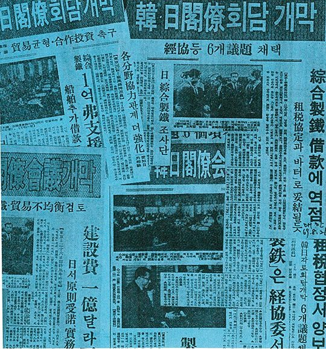
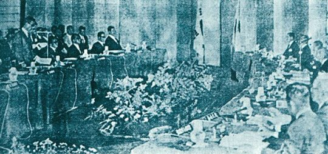

보도일 2014-12-29출처 조선일보 프리미엄조선 연재
1969년 8월 15일, 아이치 외무상이 한국 광복절을 축하하듯 기자회견을 통해 외무성 대장성 통산성 관계자들이 여러 차례 합동회의를 한 결과 대일청구권자금 전용에 대해 긍정적인 방향으로 검토가 이루어졌고 22일 일본 각의에서 최종 결정이 내려질 것이라고 발표했다. 이러면 다 된 밥이었다. 며칠 전에 관방부장관 기무리 도시오가 박태준, 야기, 박철언을 총리 관저로 불러서 “성사되었다. 박 대통령에게 보고해라.
단, 끝까지 기밀을 유지해라”라고 일러준 그대로 ‘성사’가 된 것이고, 8월 15일이라는 특별한 날을 맞아 일본정부가 먼저 공개한 것이었다.
신생아 포항제철을 기사회생시킬 대한민국 산업화시대의 그 중대하고 긴요한 외교적 대성과는 ‘박정희의 사람들’이 저마다 최선을 기울이면서 연합작전을 성공적으로 수행한 결실이기도 했다. 박태준이 도쿄의 각계 거물들과 연쇄적으로 만나서 완벽한 정지작업을 해내고, 경제기획원의 정문도 운영차관보와 양윤세 투자진흥관을 비롯한 한국 관료들이 김학렬 부총리의 열정적인 지원과 지휘를 받으며 부지런히 뛰어다니고, 김종필까지 나서서 일본 정계 지도자들에게 ‘한국의 반공 방파제론, 그로 인한 과중한 방위비 부담론’을 설파했던 것이다.

그런데 오히라가 느닷없이 심통을 부리듯 다 된 밥에 재를 뿌렸다. “아직 검토단계에 있고 최종 결정을 내리기에는 시간이 좀 더 필요하다”라는 통산성 성명을 발표한 것이었다. 일본 각의가 열리는 8월 22일까지는 일주일의 여유도 없었고, 한일각료회의까지는 딱 열흘이 남아 있었다.
마지막 장애물 오히라. 지난해(1968년) 8월 한일각료회의에서도 제철차관을 타진하는 한국 장관들에게 “한국은 일본 철강제품을 수입하는 것이 훨씬 유리하다”라고 한 수 가르치듯 떠들었던 바로 그 오히라. 박태준은 아찔했다.
아이치 외무상이 공표하기 전에 이미 비선 라인으로 박정희 대통령에게 ‘성사 보고’까지 해뒀는데, 천운을 얻은 것처럼 순조롭게 풀려나가는 국가대사에 기어이 마(魔)가 한 번 끼는 건가? 그는 찜찜하기도 했다. 그러나 머뭇거릴 시간이 없었다. 무슨 수를 쓰든 오히라를 설득해야 했다. 일본 내각은 의사결정 구조가 전원합의체이므로 한 각료라도 비틀면 일을 그르칠 수도 있다.
박태준은 야스오카의 주선으로 오히라와 안면을 튼 사이여서 ‘무슨 수’를 쓰긴 써야겠지만 직접 다시 만나는 ‘수’가 최선의 ‘수’이자 유일의 ‘수’라고 생각했다. 그의 면담 신청을 오히라가 받아줬다. 경제학을 전공한 오히라는 독특하게 생긴 인물이었다. 유난히 큰 얼굴에 눈이 가늘어서 감고 있는 것 같았다. 그가 문제의 성명에 대한 근거를 대듯 박태준에게 경제학원론을 펼쳐놓았다.
“경제원칙에 의하면 산업화의 첫 단계는 농업자립화입니다. 농업자립화가 이루어졌을 때, 이를 바탕으로 성숙한 시장경제가 들어서게 됩니다. 제철소 건설은 그 다음의 일이지요. 지금의 한국은 농업에 투자할 시기입니다. 비료공장, 농기계공장을 세워 농업부터 발전시켜야 합니다. 수익성이 보장되지 않는다는 이유로 외국 은행들이 차관을 거부한 환경에서 제철소 건설을 밀어붙이겠다는 것은 무모한 선택이 아닐까요?”
오히라의 실눈은 상대를 똑바로 쳐다보지 않았으나 박태준은 경제전문가로서의 판단에 따라 반대한다는 점을 간파했다. 오히라가 ‘반한감정’을 앞세우지 않는다는 점을 그나마 다행이라고 여겨야 했다. 이것이 소득이었다. 그는 나쁜 인상을 남기지 않으려고 일단 얌전히 물러났다.
‘농업자립화 우선’이라는 오히라의 주장은 장면 정권에서도 검토한 정책이었으나 박정희 정권은 중화학공업에 최우선으로 힘을 모았다. 이제 종합제철소만 건설하면 산업화의 확고한 기반을 다질 수 있는 단계였다. 한국은 비료공장을 이미 갖추고 있었다. 1966년 9월 ‘한비사건’이 터지긴 했으나, 이병철의 삼성이 일본과 협력해서 울산공업단지에 세운 야심작 한국비료가 대표적인 공장이었다.
농기계공장을 세워야 한다는 오히라의 충고도 틀리진 않았다. 몇 년 전부터 북한이 ‘또락또르’를 대대적으로 생산하며 농업 기계화를 부르짖고 있는 상황에서 남한도 농기계 생산에 깊은 관심을 기울이지 않을 리 없었다. 하지만 농기계를 나무로 만들랴. 북한은 종합제철소가 있지만 남한은 없으니 양질의 철을 생산해야 농기계공장도 갖출 수 있을 것 아닌가?

그러나 두 번째 만남에서도 오히라는 박태준에게 자신의 경제지식을 양보하지 않았다. 박태준은 어떡하든 꼼짝 못하게 항복시킬 논리를 찾아야 했다. 시간은 많지 않았다. 22일 전에 오히라를 설득하고, 22일 전후로 일본철강연맹의 구체적 확약서를 받아야 했다. 박태준은 또다시 오히라에게 면담을 신청했다. 세 번째인데도 그는 선뜻 만나주었다.
“한 주일 내에 박 사장을 세 번째로 만나는데, 이런 일은 당신이 처음이오만, 내 원칙에는 아직 변함이 없어요.”
“덕분에 공부를 많이 하게 되었습니다. 청일전쟁을 준비하는 과정에서 일본은 영국으로부터 군함을 차관으로 도입해왔습니다. 제철소가 없었기 때문입니다. 그래서 일본은 청일전쟁을 통해 제철소의 필요성을 절감했고, 명치 30년에 7만 톤짜리 야하타제철소를 세웠습니다. 그 뒤에 러일전쟁을 준비하는 일본에게 제철소의 필요성은 다시 절실해졌고, 제철소 건설을 서두르게 되었습니다.
그러니까 일본은 단순히 산업적 목적의식에서만 제철소를 세웠던 것이 아니라, 안보적 차원을 더 깊이 고려했습니다. 그때 제철소 건설에 심혈을 기울이고 있던 일본의 1인당 GNP는 오늘의 화폐가치로 100달러 미만이었고, 한국의 현재 1인당 GNP는 200달러에 육박하고 있습니다.”
갑자기 오히라의 실눈이 드러났다. 세 번의 만남을 통틀어 눈동자가 처음 빛을 쏘았다.
“그걸 어디 가서 조사했어요?”
“정부간행물보관소를 뒤졌습니다.”
그것은 사실이었다. 설득의 논리를 세우고 근거를 찾느라 골몰하고 있던 박태준의 머리에 섬광처럼 떠오른 생각이 그곳을 뒤져보자는 것이었다.
“정말 공부를 했군요.”
박태준은 한 발 더 나갔다.
“북한은 일본이 남긴 제철소들이 있는 데다 소련의 지원까지 받으면서 이미 한국보다 열 배 넘는 철강을 생산해서 대규모로 무기를 만들고 농기계도 만듭니다. 한국이 제철소를 짓겠다는 것은 산업적 수익성뿐만 아니라 안보적 차원도 고려한 정책입니다. 현재의 냉전체제 대결에서 한국의 안보는 일본의 안보와 직결되는 문제가 아닙니까?”
오히라의 눈이 다시 사금파리처럼 반짝거렸다. 그가 불쑥 엉뚱한 말을 했다.
“사실은 내 숙부가 한국의 동남쪽에 사셨던 적이 있습니다. 경상북도 영일군 대송면의 대송국민학교에서 교장으로 봉직했습니다.”
“예에? 그렇습니까? 그곳이 바로 우리 공장이 들어서는 자리입니다.”
“정말 우연의 일치군요.”
“인연이 있는 겁니다.”
영일군(포항시로 통합됨) 대송면은 포항제철과 철강공단이 들어서는 터전이니, 박태준은 급히 ‘남다른 인연’을 상기시키며 한숨을 돌렸다. 대일청구권자금을 전용하기 위한 장도의 마지막 장애물을 한쪽으로 확실히 밀어낸 순간이었다.